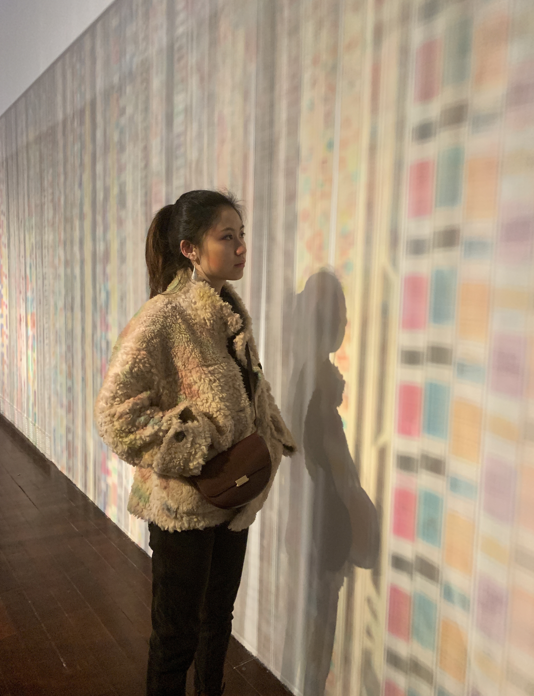
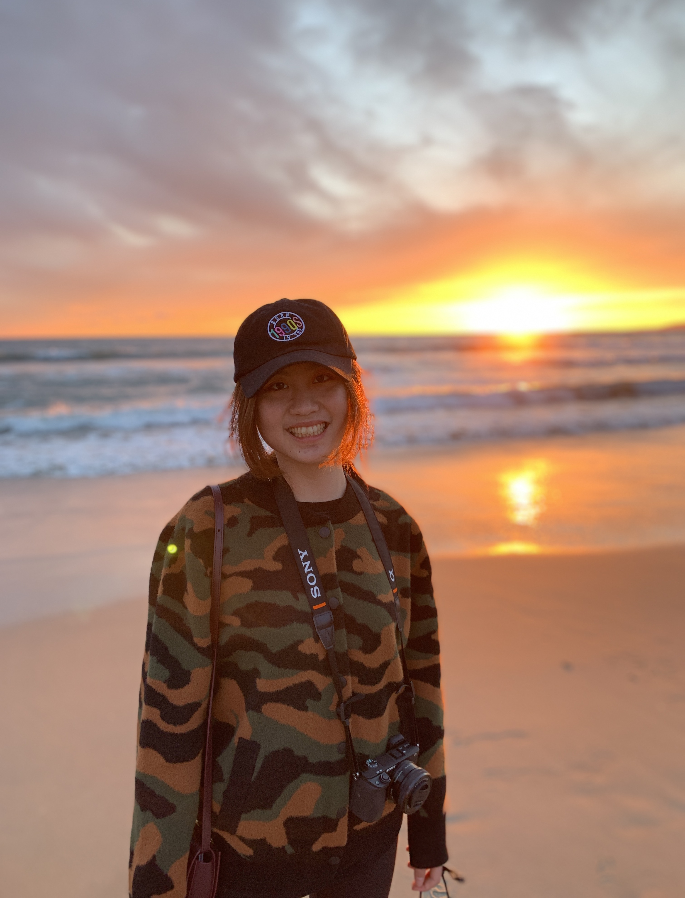
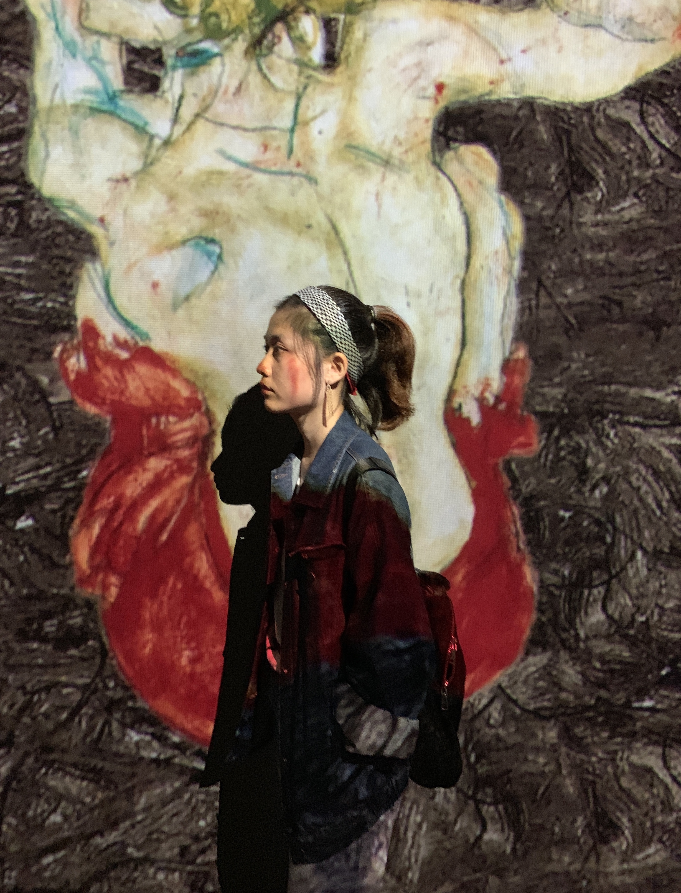

Hi there! This is Ginny.
I'm a junior at Carnegie Mellon University based in Pittsburgh, PA. I'm majoring in statistics and machine learning with a minor in media design. I am passionate about using big data to inform my design decisions, come up with design solutions that address peoples' needs and promote the well-being of everyday lives.
I really enjoy jogging at my free time, especially on Saturday mornings where the city is super quiet. Cooking is another interest that I picked up during qurantine. My friends say that I'm a professional Youtube-watching chef because I spent so much time watching youtube food tutorials. I also enjoy travelling a lot (I missed the good old days when travelling is still a thing). I like to film silly videos every time I go on a trip, so editing the travelling video afterwards is always a fun experience.
Check out the hobby page for more information!

Photo Gallery
  